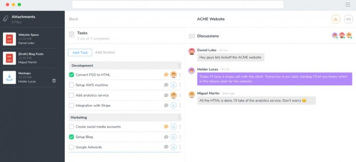

Nos presentan Winio como una nueva herramienta que podemos usar para mantener comunicado a un equipo de trabajo. Es un espacio organizado capaz de configurarse en función de las necesidades de cada equipo, una aplicación web que combina documentos, tareas y discusiones para potenciar la colaboración transparente.
En Winio odian los chats, y lo justifican con una simple frase:
En la Era de la Interrupción no responder instantáneamente a un mensaje es como apartarse de una persona en medio de una conversación, y usted sabe lo grosero que es eso.
El chat es ideal para interacciones rápidas, o cuando el problema podría afectar la operación actual de la empresa, pero cuando una parte importante de la comunicación interna se ejecuta a través de chat en vivo, las interrupciones acabarán con la productividad del grupo.
Con eso en mente han creado una plataforma basada en discusiones específicas sobre temas, con comentarios en tiempo real de los miembros de un mismo proyecto, donde pueden participar tanto clientes como profesionales.
Todos los proyectos guardados en Winio son guardados en la nube, y todas las tareas son transparentes, para que el equipo sepa lo que tiene que hacer y el motivo.
Es una interfaz sencilla y práctica que puede usarse sin tener que cambiar hábitos y procesos actuales, con una versión gratuita limitada a cinco usuarios (sin límite de proyectos).
Comparte en:


Juan Diego Polo
Estudió Ingeniería de Telecomunicaciones en la UPC (Barcelona), trabajando como ingeniero, profesor y analista desde 1998 hasta 2005, cuando decidió emprender creando wwwhatsnew.com.